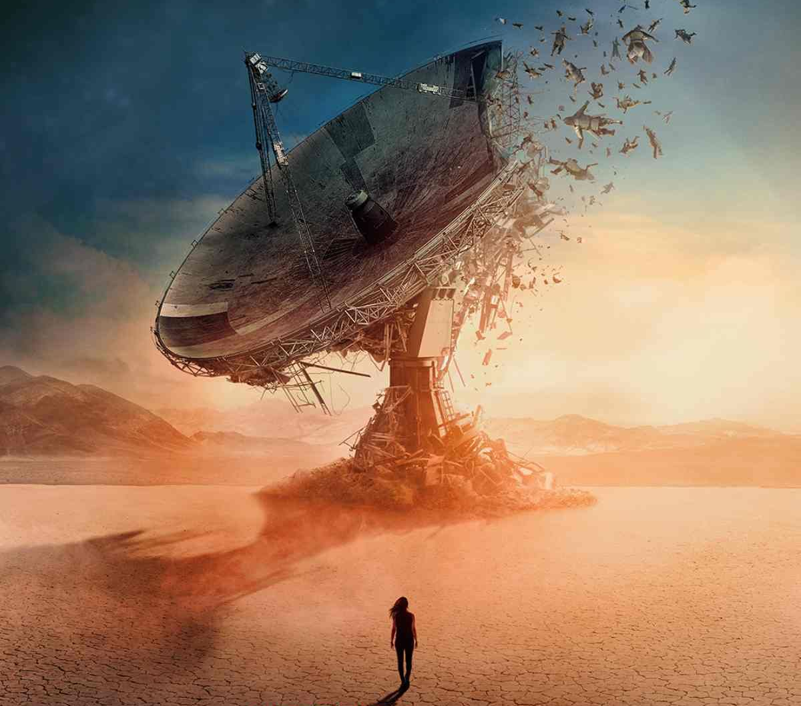

EL PROBLEMA DE LOS TRES CUERPOS
Una amenaza cósmica que cambiará el destino de la humanidad
Basada en la aclamada novela de Liu Cixin, esta serie de ciencia ficción nos transporta a un futuro donde la humanidad enfrenta su mayor desafío: el primer contacto con una civilización alienígena avanzada. A través de una narrativa que combina física cuántica, filosofía y supervivencia, la serie explora las consecuencias de nuestras decisiones cuando el destino de toda la especie está en juego.
Conoce más sobre la serie →